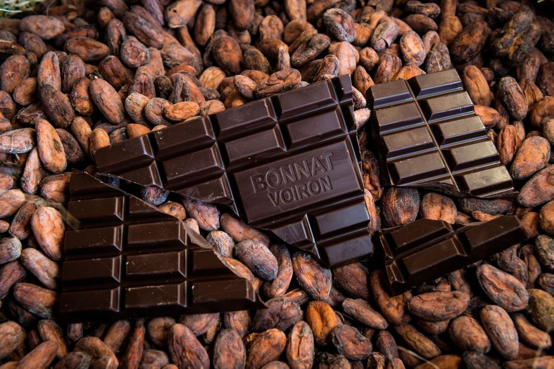
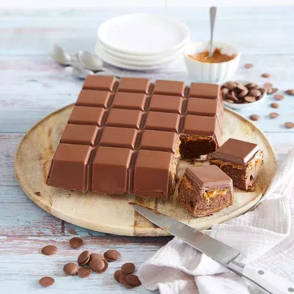
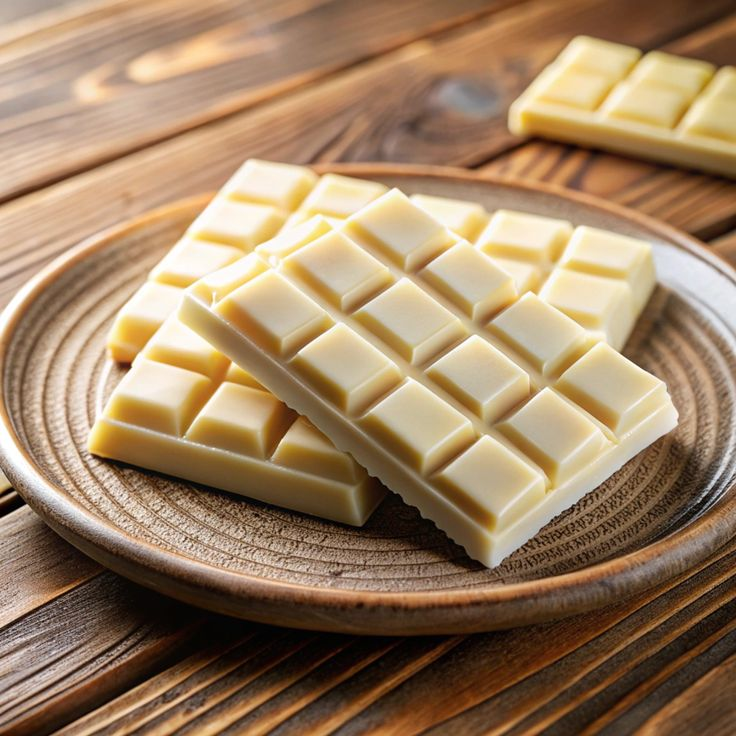

Le chocolat noir est un type de chocolat qui se compose principalement de pâte de cacao, de beurre de cacao et de sucre, sans ou avec une très faible quantité de lait, contrairement au chocolat au lait. Il se caractérise par son goût plus intense et plus amer en raison de sa teneur plus élevée en cacao, généralement entre 50 % et 90 %, voire plus.
visite
Les chocolats Noirs
Le chocolat noir est un type de chocolat qui se compose principalement de pâte de cacao, de beurre de cacao et de sucre, sans ou avec une très faible quantité de lait, contrairement au chocolat au lait. Il se caractérise par son goût plus intense et plus amer en raison de sa teneur plus élevée en cacao, généralement entre 50 % et 90 %, voire plus.
visite

visite
Les chocolats au laits
Le chocolat au lait est un type de chocolat qui contient du lait en poudre, du lait concentré ou du lait liquide, en plus du cacao, du sucre et du beurre de cacao. Cette combinaison lui confère une texture crémeuse et un goût plus doux et sucré par rapport au chocolat noir, qui contient principalement du cacao.Il est souvent apprécié pour son équilibre entre la richesse du cacao .visite

Les chocolats sans sucre
Le chocolat sans sucre est un type de chocolat conçu pour ne pas contenir de sucre ajouté, ce qui en fait une alternative pour les personnes cherchant à réduire leur consommation de sucre ou ayant des besoins spécifiques, comme les diabétiques. Ce chocolat est généralement sucré avec des substituts de sucre, tels que des édulcorants comme le stevia, l'érythritol ou le maltitol.visite

Le chocolat blanc est un type de chocolat qui se distingue des autres variétés par l'absence de pâte de cacao. Contrairement au chocolat noir ou au chocolat au lait, le chocolat blanc est composé principalement de beurre de cacao, de sucre, de lait en poudre et parfois de vanille. Il n’a pas la couleur foncée du chocolat traditionnel, car il ne contient pas de solides de cacao.
visite
Les chocolats blancs
Le chocolat blanc est un type de chocolat qui se distingue des autres variétés par l'absence de pâte de cacao. Contrairement au chocolat noir ou au chocolat au lait, le chocolat blanc est composé principalement de beurre de cacao, de sucre, de lait en poudre et parfois de vanille. Il n’a pas la couleur foncée du chocolat traditionnel, car il ne contient pas de solides de cacao.
visite